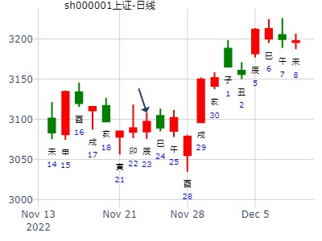

主帖标题: 起了卦看18号的大盘行情
起卦方式：铜钱摇卦 占问事宜：18号的大盘情况
起卦公历：2011年1月18日0时2分(北京时间)。
起卦干支： 庚寅年 己丑月 癸酉日 壬子时
主变卦 兑为泽(兑宫) 之 兑为泽(兑宫) [空亡:戌、亥]
白虎 ━ ━ 父母未土 世 ━ ━ 父母未土 世
腾蛇 ━━━ 兄弟酉金 ━━━ 兄弟酉金
勾陈 ━━━ 子孙亥水 ━━━ 子孙亥水
朱雀 ━ ━ 父母丑土 应 ━ ━ 父母丑土 应
青龙 ━━━ 妻财卯木 ━━━ 妻财卯木
玄武 ━━━ 官鬼巳火 ━━━ 官鬼巳火
谁来断一断
貌似要好起来了.....
主题：上证指数在2016年的走势
乙未 己丑 丁亥 庚子 (午未空) 乙未年±月廿七
(2016/01/06 00:15:00)
兑为泽
青龙 父母未土 ∥ 世
玄武 兄弟酉金 ／
白虎 子孙亥水 ／
腾蛇 父母丑土 ∥ 应
勾陈 妻财卯木 ／
朱雀 官鬼巳火 ／
年卦汇总参考：000516渝开发，600320振华重工，000705浙江震元，上证指数2016-01-06
问生日为辛酉日主，还是壬戌日主？兑为泽静卦。
排卦：元亨利贞网六爻在线排盘系统 https://www.china95.net
公历起卦时间：2022年1月19日21时56分 (在线摇卦)
干支：辛丑年 辛丑月 壬申日 辛亥时 （日空：戌亥）
神煞：驿马－寅 桃花－酉 日禄－亥 贵人－卯，巳
兑宫：兑为泽 (六冲)
六神 伏神 本 卦
白虎 父母丁未土 ▅▅ ▅▅ 世
螣蛇 兄弟丁酉金 ▅▅▅▅▅
勾陈 子孙丁亥水 ▅▅▅▅▅
朱雀 父母丁丑土 ▅▅ ▅▅ 应
青龙 妻财丁卯木 ▅▅▅▅▅
玄武 官鬼丁巳火 ▅▅▅▅▅
辛酉即兑卦。
占事：教授---浙江震元2015 方式：手工指定
公历：2015年2月12日17时37分 星期四 北京时间
干支：乙未年 戊寅月 己未日 癸酉时
旬空：辰巳 申酉 子丑 戌亥
寅月 己未日 （旬空：子丑）
兑：兑为泽(六冲)
六神 【本 卦】
勾陈 ▅▅ ▅▅ 父母丁未土(天河水) 世
朱雀 ▅▅▅▅▅ 兄弟丁酉金(山下火)
青龙 ▅▅▅▅▅ 子孙丁亥水(屋上土)
玄武 ▅▅ ▅▅ 父母丁丑土(涧下水) 应
白虎 ▅▅▅▅▅ 妻财丁卯木(炉中火)
螣蛇 ▅▅▅▅▅ 官鬼丁巳火(沙中土)
参考：600320 在2015年
安圆圆 占事：600320振华重工在2015年的走势如
排卦：元亨利贞网六爻在线排盘系统
公历起卦时间：2014年12月22日20时25分 (手工指定)
干支：甲午年 丙子月 丁卯日 庚戌时 （日空：戌亥）
兑宫：兑为泽 (六冲) 兑宫：兑为泽 (六冲)
六神 伏神 本 卦 变 卦
青龙 父母丁未土 ▅▅ ▅▅ 世 父母丁未土 ▅▅ ▅▅ 世
玄武 兄弟丁酉金 ▅▅▅▅▅ 兄弟丁酉金 ▅▅▅▅▅
白虎 子孙丁亥水 ▅▅▅▅▅ 子孙丁亥水 ▅▅▅▅▅
腾蛇 父母丁丑土 ▅▅ ▅▅ 应 父母丁丑土 ▅▅ ▅▅ 应
勾陈 妻财丁卯木 ▅▅▅▅▅ 妻财丁卯木 ▅▅▅▅▅
朱雀 官鬼丁巳火 ▅▅▅▅▅ 官鬼丁巳火 ▅▅▅▅▅
巳月子孙破，大震荡 。未月墓财。转跌。
年卦汇总参考：000516渝开发，600320振华重工，000705浙江震元，上证指数2016-01-06
主帖标题: 试测上证2.25收盘走势
男 占事：上证2.25收盘走势
公历起卦时间：2021年2月25日8时17分 (电脑自动)
干支：辛丑年 庚寅月 甲辰日 戊辰时 （日空：寅卯）
兑宫：兑为泽 (六冲) 兑宫：兑为泽 (六冲)
六神 伏神 本 卦 变 卦
玄武 父母丁未土 ▅▅ ▅▅ 世 父母丁未土 ▅▅ ▅▅ 世
白虎 兄弟丁酉金 ▅▅▅▅▅ 兄弟丁酉金 ▅▅▅▅▅
螣蛇 子孙丁亥水 ▅▅▅▅▅ 子孙丁亥水 ▅▅▅▅▅
勾陈 父母丁丑土 ▅▅ ▅▅ 应 父母丁丑土 ▅▅ ▅▅ 应
朱雀 妻财丁卯木 ▅▅▅▅▅ 妻财丁卯木 ▅▅▅▅▅
青龙 官鬼丁巳火 ▅▅▅▅▅ 官鬼丁巳火 ▅▅▅▅▅
测600706长安信息走势 起卦方式：手工指定
公历时间：2007年3月21日13时46分 星期三
干支：丁亥年癸卯月甲寅日辛未时 (旬空：子丑)
兑宫：兑为泽（六冲）
玄武 ▅▅ ▅▅ 父母丁未土 世
白虎 ▅▅▅▅▅ 兄弟丁酉金
螣蛇 ▅▅▅▅▅ 子孙丁亥水
勾陈 ▅▅ ▅▅ 父母丁丑土 应
朱雀 ▅▅▅▅▅ 妻财丁卯木
青龙 ▅▅▅▅▅ 官鬼丁巳火
卦为六冲，将会有震荡，但六爻安静，震幅有限。世处上六，财处二爻，同时应爻逢空，此股当前的价位离主力的目标尚有一段距离，但市场参与度不高，也预示此股很难达到主力的期望目标。财爻临日月，高点就在眼前，最迟应在清明前后了结退出。
男 占事：大名城(600094)下周涨跌
公历起卦时间：2014年3月14日15时17分 (电脑自动)
干支：甲午年 丁卯月 甲申日 壬申时 （日空：午未）
兑宫：兑为泽 (六冲) 兑宫：兑为泽 (六冲)
六神 伏神 本 卦 变 卦
玄武 父母丁未土 ▅▅ ▅▅ 世 父母丁未土 ▅▅ ▅▅ 世
白虎 兄弟丁酉金 ▅▅▅▅▅ 兄弟丁酉金 ▅▅▅▅▅
腾蛇 子孙丁亥水 ▅▅▅▅▅ 子孙丁亥水 ▅▅▅▅▅
勾陈 父母丁丑土 ▅▅ ▅▅ 应 父母丁丑土 ▅▅ ▅▅ 应
朱雀 妻财丁卯木 ▅▅▅▅▅ 妻财丁卯木 ▅▅▅▅▅
青龙 官鬼丁巳火 ▅▅▅▅▅ 官鬼丁巳火 ▅▅▅▅▅
占事：渝开发16.3.4-17.3.3 起卦方式：手动摇卦 六爻排盘
公历时间：2016年3月4日8时11分
干支：丙申年 庚寅月 乙酉日 庚辰时 旬空：辰巳 午未 午未 申酉
兑宫：兑为泽（六冲）
六神 【本 卦】
玄武 ▄▄ ▄▄ 父母丁未土 世
白虎 ▄▄▄▄▄ 兄弟丁酉金
螣蛇 ▄▄▄▄▄ 子孙丁亥水
勾陈 ▄▄ ▄▄ 父母丁丑土 应
朱雀 ▄▄▄▄▄ 妻财丁卯木
青龙 ▄▄▄▄▄ 官鬼丁巳火
年卦汇总：000516渝开发，600320振华重工，000705浙江震元
st新能三月走势？
时间: 2019-03-01 16时29分
干支: 己亥年丙寅月丁酉日 (旬空: 辰巳 )
兑静卦
青龙 ▅▅ ▅▅ 父母未土 世
玄武 ▅▅▅▅▅ 兄弟酉金
白虎 ▅▅▅▅▅ 子孙亥水
腾蛇 ▅▅ ▅▅ 父母丑土 应
勾陈 ▅▅▅▅▅ 妻财卯木
朱雀 ▅▅▅▅▅ 官鬼巳火
主帖标题: [讨论]测5.8日趋势共得七个卦
测5.8日趋势共得七个卦在5月7日20.40分时共得7个卦 其中有三卦不动，在各卦评论中见有评升，有评跌，多空有分岐。
一 金眼牛网友第一卦
辰月甲午日 4月30日
兑宫：兑为泽（六冲）
六神 【本 卦】
玄武 ▄▄ ▄▄ 父母丁未土 世
白虎 ▄▄▄▄▄ 兄弟丁酉金
螣蛇 ▄▄▄▄▄ 子孙丁亥水
勾陈 ▄▄ ▄▄ 父母丁丑土 应
朱雀 ▄▄▄▄▄ 妻财丁卯木
青龙 ▄▄▄▄▄ 官鬼丁巳
明寅日合财不破。
二钱水源上海股市大盘下周涨跌走势？
丁亥 乙巳 庚子 庚辰 (辰巳空)
雷水解
腾蛇 妻财戌土 ∥
勾陈 官鬼申金 ∥ 应
朱雀 子孙午火 ／
青龙 子孙午火 ∥
玄武 妻财辰土 ／ 世
白虎 兄弟寅木 ∥
三cepktn 巳月 辛丑日
兑宫：雷山小过（游魂） 兑宫：地山谦
六神 伏 神 【本 卦】 【变 卦】
螣蛇 ▄▄ ▄▄ 父母庚戌土 ▄▄ ▄▄ 兄弟癸酉金
勾陈 ▄▄ ▄▄ 兄弟庚申金 ▄▄ ▄▄ 子孙癸亥水 世
朱雀 子孙丁亥水 ▄▄▄▄▄ 官鬼庚午火 世O-> ▄▄ ▄▄ 父母癸丑土
青龙 ▄▄▄▄▄ 兄弟丙申金 ▄▄▄▄▄ 兄弟丙申金
玄武 妻财丁卯木 ▄▄ ▄▄ 官鬼丙午火 ▄▄ ▄▄ 官鬼丙午火 应
白虎 ▄▄ ▄▄ 父母丙辰土 应 ▄▄ ▄▄ 父母丙辰土
午火空,才爻出伏,明天寅冲动申金暗动克才,先涨后跌
2007-05-01
四hswqy 甲辰月 乙未日
兑宫：兑为泽（六冲） 巽宫：天雷无妄（六冲）
六神 【本 卦】 【变 卦】
玄武 ▄▄ ▄▄ 父母丁未土 世X-> ▄▄▄▄▄ 父母壬戌土
白虎 ▄▄▄▄▄ 兄弟丁酉金 ▄▄▄▄▄ 兄弟壬申金
螣蛇 ▄▄▄▄▄ 子孙丁亥水 ▄▄▄▄▄ 官鬼壬午火 世
勾陈 ▄▄ ▄▄ 父母丁丑土 应 ▄▄ ▄▄ 父母庚辰土
朱雀 ▄▄▄▄▄ 妻财丁卯木 O-> ▄▄ ▄▄ 妻财庚寅木
青龙 ▄▄▄▄▄ 官鬼丁巳火 ▄▄▄▄▄ 子孙庚子水 应
五坤辰士 乙巳月 辛丑日
离宫：风水涣 离宫：天水讼（游魂）
螣蛇 ▄▄▄▄▄ 父母辛卯木 ▄▄▄▄▄ 子孙壬戌土
勾陈 ▄▄▄▄▄ 兄弟辛巳火 世 ▄▄▄▄▄ 妻财壬申金
朱雀 妻财己酉金 ▄▄ ▄▄ 子孙辛未土 X-> ▄▄▄▄▄ 兄弟壬午火 世
青龙 官鬼己亥水 ▄▄ ▄▄ 兄弟戊午火 ▄▄ ▄▄ 兄弟戊午火
玄武 ▄▄▄▄▄ 子孙戊辰土 应 ▄▄▄▄▄ 子孙戊辰土
白虎 ▄▄ ▄▄ 父母戊寅木 ▄▄ ▄▄ 父母戊寅木 应
注：合处逢冲，午未合，又逢丑日冲。
六麦华盛乙巳月 庚子日
坎宫： 水火既济
六神 伏 神 【本 卦】
螣蛇 ▄▄ ▄▄ 兄弟戊子水 应
勾陈 ▄▄▄▄▄ 官鬼戊戌土
朱雀 ▄▄ ▄▄ 父母戊申金
青龙 妻财戊午火 ▄▄▄▄▄ 兄弟己亥水 世
玄武 ▄▄ ▄▄ 官鬼己丑土
白虎 ▄▄▄▄▄ 子孙己卯木 、
5月8日上证指数趋势5月8日是震荡的一天，震荡的幅度也大。是先跌后涨的格局。跌得幅度大，收盘反弹，收盘是涨。涨的点数有象出暴一样。
七新标准110 巳月辛丑日
地泽临 兑宫：雷泽归妹（归魂）
六神 【本 卦】 【变 卦】
螣蛇 ▄▄ ▄▄ 子孙癸酉金 ▄▄ ▄▄ 兄弟庚戌土 应
勾陈 ▄▄ ▄▄ 妻财癸亥水 应 ▄▄ ▄▄ 子孙庚申金
朱雀 ▄▄ ▄▄ 兄弟癸丑土 X-> ▄▄▄▄▄ 父母庚午火
青龙 ▄▄ ▄▄ 兄弟丁丑土 ▄▄ ▄▄ 兄弟丁丑土 世
玄武 ▄▄▄▄▄ 官鬼丁卯木 世 ▄▄▄▄▄ 官鬼丁卯木
白虎 ▄▄▄▄▄ 父母丁巳火 ▄▄▄▄▄ 父母丁巳火
应财逢破，兄旺动生子。明寅日合财不破。
王点评：有3个都是兑宫，优先采纳。
男 占事：300116坚瑞消防今天涨跌
公历起卦时间：2016年4月22日5时50分 (电脑自动)
干支：丙申年 壬辰月 甲戌日 丁卯时 （日空：申酉）
兑宫：兑为泽 (六冲) 兑宫：兑为泽 (六冲)
六神 伏神 本 卦 变 卦
玄武 父母丁未土 ▅▅ ▅▅ 世 父母丁未土 ▅▅ ▅▅ 世
白虎 兄弟丁酉金 ▅▅▅▅▅ 兄弟丁酉金 ▅▅▅▅▅
腾蛇 子孙丁亥水 ▅▅▅▅▅ 子孙丁亥水 ▅▅▅▅▅
勾陈 父母丁丑土 ▅▅ ▅▅ 应 父母丁丑土 ▅▅ ▅▅ 应
朱雀 妻财丁卯木 ▅▅▅▅▅ 妻财丁卯木 ▅▅▅▅▅
青龙 官鬼丁巳火 ▅▅▅▅▅ 官鬼丁巳火 ▅▅▅▅▅
主帖标题: 21-22 沪市大盘
公历起卦时间：2022年4月20日13时46分 (电脑自动)
干支：壬寅年 甲辰月 癸卯日 己未时 （日空：辰巳）
兑宫：兑为泽 (六冲) 兑宫：兑为泽 (六冲)
六神 伏神 本 卦 变 卦
白虎 父母丁未土 ▅▅ ▅▅ 世 父母丁未土 ▅▅ ▅▅ 世
螣蛇 兄弟丁酉金 ▅▅▅▅▅ 兄弟丁酉金 ▅▅▅▅▅
勾陈 子孙丁亥水 ▅▅▅▅▅ 子孙丁亥水 ▅▅▅▅▅
朱雀 父母丁丑土 ▅▅ ▅▅ 应 父母丁丑土 ▅▅ ▅▅ 应
青龙 妻财丁卯木 ▅▅▅▅▅ 妻财丁卯木 ▅▅▅▅▅
玄武 官鬼丁巳火 ▅▅▅▅▅ 官鬼丁巳火 ▅▅▅▅▅
兄弟暗动，和20日日卦一致，偏空。
辰日 合住兄弟。比今日好转。
巳日官出空，压制兄弟，但巳酉丑三合兄弟，还是偏空。
总体还是偏空，只是比今日好转。

云南铜业何时涨停？ 男 占事：没填
公历起卦时间：2020年5月20日14时22分 (电脑自动)
干支：庚子年 辛巳月 癸亥日 己未时 （日空：子丑）
兑宫：兑为泽 (六冲) 兑宫：兑为泽 (六冲)
六神 伏神 本 卦 变 卦
白虎 父母丁未土 ▅▅ ▅▅ 世 父母丁未土 ▅▅ ▅▅ 世
螣蛇 兄弟丁酉金 ▅▅▅▅▅ 兄弟丁酉金 ▅▅▅▅▅
勾陈 子孙丁亥水 ▅▅▅▅▅ 子孙丁亥水 ▅▅▅▅▅
朱雀 父母丁丑土 ▅▅ ▅▅ 应 父母丁丑土 ▅▅ ▅▅ 应
青龙 妻财丁卯木 ▅▅▅▅▅ 妻财丁卯木 ▅▅▅▅▅
玄武 官鬼丁巳火 ▅▅▅▅▅ 官鬼丁巳火 ▅▅▅▅▅

占事：002009 Today
起卦方式：手工指定 易经股市论坛 在线排盘系统
公历时间：2013年6月3日8时47分
干 支：癸巳年 丁巳月 庚子日 庚辰时
旬 空：午未 子丑 (辰巳) 申酉
兑宫：兑为泽（六冲）
六神 【本 卦】
螣蛇 ▄▄ ▄▄ 父母丁未土 世
勾陈 ▄▄▄▄▄ 兄弟丁酉金
朱雀 ▄▄▄▄▄ 子孙丁亥水
青龙 ▄▄ ▄▄ 父母丁丑土 应
玄武 ▄▄▄▄▄ 妻财丁卯木
白虎 ▄▄▄▄▄ 官鬼丁巳火
试断：收阴。父母旺相持世、子刑卯。
占事：招行银行近一个月会涨还是跌？
起卦方式：手动摇卦 易经股市论坛 www.yijingstock.com 在线排盘系统
公历时间：2014年7月30日13时12分
干 支：甲午年 辛未月 壬寅日 丁未时
旬 空：辰巳 戌亥 (辰巳) 寅卯
兑宫：兑为泽（六冲）
六神 【本 卦】
白虎 ▄▄ ▄▄ 父母丁未土 世
螣蛇 ▄▄▄▄▄ 兄弟丁酉金
勾陈 ▄▄▄▄▄ 子孙丁亥水
朱雀 ▄▄ ▄▄ 父母丁丑土 应
青龙 ▄▄▄▄▄ 妻财丁卯木
玄武 ▄▄▄▄▄ 官鬼丁巳火

主帖标题: 8月22-26日大盘涨跌卦
占事：8月22-26日大盘涨跌？
公历起卦时间：2011年8月19日15时20分 (手工指定)
干支：辛卯年 丙申月 丙午日 丙申时 （日空：寅卯）
兑宫：兑为泽 (六冲) 兑宫：兑为泽 (六冲)
青龙 父母丁未土 ▅▅ ▅▅ 世 父母丁未土 ▅▅ ▅▅ 世
玄武 兄弟丁酉金 ▅▅▅▅▅ 兄弟丁酉金 ▅▅▅▅▅
白虎 子孙丁亥水 ▅▅▅▅▅ 子孙丁亥水 ▅▅▅▅▅
腾蛇 父母丁丑土 ▅▅ ▅▅ 应 父母丁丑土 ▅▅ ▅▅ 应
勾陈 妻财丁卯木 ▅▅▅▅▅ 妻财丁卯木 ▅▅▅▅▅
朱雀 官鬼丁巳火 ▅▅▅▅▅ 官鬼丁巳火 ▅▅▅▅▅
安圆圆 占事：中科金财在八九月的走势
公历时间：2014年8月5日23时38分
干 支：甲午年 辛未月 己酉日 甲子时 (寅卯)
兑宫：兑为泽（六冲）
六神 【本 卦】
勾陈 ▄▄ ▄▄ 父母丁未土 世
朱雀 ▄▄▄▄▄ 兄弟丁酉金
青龙 ▄▄▄▄▄ 子孙丁亥水
玄武 ▄▄ ▄▄ 父母丁丑土 应
白虎 ▄▄▄▄▄ 妻财丁卯木
螣蛇 ▄▄▄▄▄ 官鬼丁巳火
今天冲实卯木静爻，涨停。这个卦也许只是应在短线。
（测远应近经典，起卦日冲实旬空静爻，涨停）
旬空静爻逢冲
姓名：王浩鑫 出生年:1983 性别：男 占事：21日沪深大盘走势
公历时间：2015年8月20日17时50分
干 支：乙未年 甲申月 戊辰日 辛酉时
旬 空：辰巳 午未 (戌亥) 子丑
兑宫：兑为泽（六冲）
朱雀 ▄▄ ▄▄ 父母丁未土 世
青龙 ▄▄▄▄▄ 兄弟丁酉金
玄武 ▄▄▄▄▄ 子孙丁亥水
白虎 ▄▄ ▄▄ 父母丁丑土 应
螣蛇 ▄▄▄▄▄ 妻财丁卯木
勾陈 ▄▄▄▄▄ 官鬼丁巳火

亥水入墓逢冲，暴跌。
旬空静爻逢冲，未冲起，暴跌。
主帖标题: 上证8.12收盘走势 男 占事：没填
公历起卦时间：2021年8月12日9时31分 (电脑自动)
干支：辛丑年 丙申月 壬辰日 乙巳时 （日空：午未）
兑宫：兑为泽 (六冲) 兑宫：兑为泽 (六冲)
六神 伏神 本 卦 变 卦
白虎 父母丁未土 ▅▅ ▅▅ 世 父母丁未土 ▅▅ ▅▅ 世
螣蛇 兄弟丁酉金 ▅▅▅▅▅ 兄弟丁酉金 ▅▅▅▅▅
勾陈 子孙丁亥水 ▅▅▅▅▅ 子孙丁亥水 ▅▅▅▅▅
朱雀 父母丁丑土 ▅▅ ▅▅ 应 父母丁丑土 ▅▅ ▅▅ 应
青龙 妻财丁卯木 ▅▅▅▅▅ 妻财丁卯木 ▅▅▅▅▅
玄武 官鬼丁巳火 ▅▅▅▅▅ 官鬼丁巳火 ▅▅▅▅▅
亥日旬空静爻逢冲，没被冲起。
主帖标题: 铜钱摇2.买入南航权证[580989]能否得财？
今日几时卖出南航权证价位最高？
公历起卦时间：2007年9月24日7时41分 (手工指定)
干支：丁亥年己酉月辛酉日壬辰时 （日空：子丑）
兑静卦
腾蛇 ▅▅ ▅▅ 父母未土 世
勾陈 ▅▅▅▅▅ 兄弟酉金
朱雀 ▅▅▅▅▅ 子孙亥水
青龙 ▅▅ ▅▅ 父母丑土 应
玄武 ▅▅▅▅▅ 妻财卯木
白虎 ▅▅▅▅▅ 官鬼巳火
主帖标题: 9月26-30日大盘涨跌卦
占事：9月26-30日大盘涨跌？
公历起卦时间：2011年9月23日16时11分 (手工指定)
干支：辛卯年 丁酉月 辛巳日 丙申时 （日空：申酉）
兑宫：兑为泽 (六冲) 兑宫：兑为泽 (六冲)
六神 伏神 本 卦 变 卦
腾蛇 父母丁未土 ▅▅ ▅▅ 世 父母丁未土 ▅▅ ▅▅ 世
勾陈 兄弟丁酉金 ▅▅▅▅▅ 兄弟丁酉金 ▅▅▅▅▅
朱雀 子孙丁亥水 ▅▅▅▅▅ 子孙丁亥水 ▅▅▅▅▅
青龙 父母丁丑土 ▅▅ ▅▅ 应 父母丁丑土 ▅▅ ▅▅ 应
玄武 妻财丁卯木 ▅▅▅▅▅ 妻财丁卯木 ▅▅▅▅▅
白虎 官鬼丁巳火 ▅▅▅▅▅ 官鬼丁巳火 ▅▅▅▅▅
晓鸣股份未来二周
时间: 2021-10-19 11时31分
干支: 辛丑年戊戌月庚子日 (旬空: 辰巳 )
兑静卦
腾蛇 ▅▅ ▅▅ 父母未土 世
勾陈 ▅▅▅▅▅ 兄弟酉金
朱雀 ▅▅▅▅▅ 子孙亥水
青龙 ▅▅ ▅▅ 父母丑土 应
玄武 ▅▅▅▅▅ 妻财卯木
白虎 ▅▅▅▅▅ 官鬼巳火
兰州民百下周涨跌.兑为泽静卦。
公历起卦时间：2016年11月25日10时17分 (电脑自动)
干支：丙申年 己亥月 辛亥日 癸巳时 （日空：寅卯）
兑宫：兑为泽 (六冲) 兑宫：兑为泽 (六冲)
腾蛇 父母丁未土 ▅▅ ▅▅ 世 父母丁未土 ▅▅ ▅▅ 世
勾陈 兄弟丁酉金 ▅▅▅▅▅ 兄弟丁酉金 ▅▅▅▅▅
朱雀 子孙丁亥水 ▅▅▅▅▅ 子孙丁亥水 ▅▅▅▅▅
青龙 父母丁丑土 ▅▅ ▅▅ 应 父母丁丑土 ▅▅ ▅▅ 应
玄武 妻财丁卯木 ▅▅▅▅▅ 妻财丁卯木 ▅▅▅▅▅
白虎 官鬼丁巳火 ▅▅▅▅▅ 官鬼丁巳火 ▅▅▅▅▅
瑞芯微1111二周。兑为泽静卦。.md
时间: 2021-11-11 9时57分
干支: 辛丑年己亥月癸亥日 (旬空: 子丑 )
兑静卦
白虎 ▅▅ ▅▅ 父母未土 世
腾蛇 ▅▅▅▅▅ 兄弟酉金
勾陈 ▅▅▅▅▅ 子孙亥水
朱雀 ▅▅ ▅▅ 父母丑土 应
青龙 ▅▅▅▅▅ 妻财卯木
玄武 ▅▅▅▅▅ 官鬼巳火
2021-11-11
2022-11-11
1111问512660ETF两周卦。风生水起。兑为泽静卦。
时间: 2022-11-11 12时32分
干支: 壬寅年辛亥月戊辰日 (旬空: 戌亥 )
兑静卦
朱雀 ▅▅ ▅▅ 父母未土 世
青龙 ▅▅▅▅▅ 兄弟酉金
玄武 ▅▅▅▅▅ 子孙亥水
白虎 ▅▅ ▅▅ 父母丑土 应
腾蛇 ▅▅▅▅▅ 妻财卯木
勾陈 ▅▅▅▅▅ 官鬼巳火
主帖标题: 沪指线态
大白牛车 发表于 2022-11-23 13:35
三哥三板斧之一:断头闸刀一闪，一道长阴斩下三根粘合均线。缺口下方还有两根均线巳粘合
壬寅 辛亥 庚辰 癸未 (申酉空) 壬寅年十月初一(2022/11/23 13:37:32)
按两根小阳起卦
兑为泽
腾蛇 父母未土 ∥ 世
勾陈 兄弟酉金 ／
朱雀 子孙丁亥 ／
青龙 父母丑土 ∥ 应
玄武 妻财卯木 ／
白虎 官鬼巳火 ／
注：数理卦，仅供参考

兑为泽卦静卦，2011.1.5－2.3，上证丑月走势综合
排卦：元亨利贞网六爻在线排盘系统 http://www.china95.net
公历起卦时间：2010年12月27日20时0分 (手工指定)
干支：庚寅年 戊子月 辛亥日 戊戌时 （日空：寅卯）
兑宫：兑为泽 (六冲) 兑宫：兑为泽 (六冲)
六神 伏神 本 卦 变 卦
腾蛇 父母丁未土 ▅▅ ▅▅ 世 父母丁未土 ▅▅ ▅▅ 世
勾陈 兄弟丁酉金 ▅▅▅▅▅ 兄弟丁酉金 ▅▅▅▅▅
朱雀 子孙丁亥水 ▅▅▅▅▅ 子孙丁亥水 ▅▅▅▅▅
青龙 父母丁丑土 ▅▅ ▅▅ 应 父母丁丑土 ▅▅ ▅▅ 应
玄武 妻财丁卯木 ▅▅▅▅▅ 妻财丁卯木 ▅▅▅▅▅
白虎 官鬼丁巳火 ▅▅▅▅▅ 官鬼丁巳火 ▅▅▅▅▅
先跌后涨？？为什么？
主帖标题: 601018宁波港明天涨跌
男 占事：601018宁波港近期涨跌
公历起卦时间：2014年12月18日17时2分 (电脑自动)
干支：甲午年 丙子月 癸亥日 辛酉时 （日空：子丑）
兑宫：兑为泽 (六冲) 兑宫：兑为泽 (六冲)
六神 伏神 本 卦 变 卦
白虎 父母丁未土 ▅▅ ▅▅ 世 父母丁未土 ▅▅ ▅▅ 世
腾蛇 兄弟丁酉金 ▅▅▅▅▅ 兄弟丁酉金 ▅▅▅▅▅
勾陈 子孙丁亥水 ▅▅▅▅▅ 子孙丁亥水 ▅▅▅▅▅
朱雀 父母丁丑土 ▅▅ ▅▅ 应 父母丁丑土 ▅▅ ▅▅ 应
青龙 妻财丁卯木 ▅▅▅▅▅ 妻财丁卯木 ▅▅▅▅▅
玄武 官鬼丁巳火 ▅▅▅▅▅ 官鬼丁巳火 ▅▅▅▅▅
安圆圆 占事：600320振华重工在2015年的走势如
排卦：元亨利贞网六爻在线排盘系统
公历起卦时间：2014年12月22日20时25分 (手工指定)
干支：甲午年 丙子月 丁卯日 庚戌时 （日空：戌亥）
兑宫：兑为泽 (六冲) 兑宫：兑为泽 (六冲)
六神 伏神 本 卦 变 卦
青龙 父母丁未土 ▅▅ ▅▅ 世 父母丁未土 ▅▅ ▅▅ 世
玄武 兄弟丁酉金 ▅▅▅▅▅ 兄弟丁酉金 ▅▅▅▅▅
白虎 子孙丁亥水 ▅▅▅▅▅ 子孙丁亥水 ▅▅▅▅▅
腾蛇 父母丁丑土 ▅▅ ▅▅ 应 父母丁丑土 ▅▅ ▅▅ 应
勾陈 妻财丁卯木 ▅▅▅▅▅ 妻财丁卯木 ▅▅▅▅▅
朱雀 官鬼丁巳火 ▅▅▅▅▅ 官鬼丁巳火 ▅▅▅▅▅
巳月子孙破，大震荡 。未月墓财。转跌。
占事：教授---浙江震元2015 方式：手工指定
公历：2015年2月12日17时37分 星期四 北京时间
干支：乙未年 戊寅月 己未日 癸酉时
旬空：辰巳 申酉 子丑 戌亥
寅月 己未日 （旬空：子丑）
兑：兑为泽(六冲)
六神 【本 卦】
勾陈 ▅▅ ▅▅ 父母丁未土(天河水) 世
朱雀 ▅▅▅▅▅ 兄弟丁酉金(山下火)
青龙 ▅▅▅▅▅ 子孙丁亥水(屋上土)
玄武 ▅▅ ▅▅ 父母丁丑土(涧下水) 应
白虎 ▅▅▅▅▅ 妻财丁卯木(炉中火)
螣蛇 ▅▅▅▅▅ 官鬼丁巳火(沙中土)
年卦汇总参考：000516渝开发，600320振华重工，000705浙江震元，上证指数2016-01-06
** 东兴证券 ** 子月走势——乾隆币卦 niubi 东兴证券子月走势
公历时间：2015年12月15日9时57分
干 支：乙未年 戊子月 乙丑日 辛巳时 旬 空：辰巳 午未 (戌亥) 申酉
兑宫：兑为泽（六冲）
玄武 ▄▄ ▄▄ 父母丁未土 世
白虎 ▄▄▄▄▄ 兄弟丁酉金
螣蛇 ▄▄▄▄▄ 子孙丁亥水
勾陈 ▄▄ ▄▄ 父母丁丑土 应
朱雀 ▄▄▄▄▄ 妻财丁卯木
青龙 ▄▄▄▄▄ 官鬼丁巳火
主帖标题: 12月21至12月25日大盘预测(日测)
明天周二涨跌
公历时间：2020年12月21日20时55分
干 支：庚子年 戊子月 戊戌日 壬戌时
旬 空：辰巳 午未 辰巳 子丑
兑宫：兑为泽（六冲）
六神 【本 卦】
朱雀 ▄▄ ▄▄ 父母丁未土 世
青龙 ▄▄▄▄▄ 兄弟丁酉金
玄武 ▄▄▄▄▄ 子孙丁亥水
白虎 ▄▄ ▄▄ 父母丁丑土 应
螣蛇 ▄▄▄▄▄ 妻财丁卯木
勾陈 ▄▄▄▄▄ 官鬼丁巳火
清新环境2周。兑为泽静卦。
时间: 2021-12-18 16时31分
干支: 辛丑年庚子月庚子日 (旬空: 辰巳 )
兑静卦
腾蛇 ▅▅ ▅▅ 父母未土 世
勾陈 ▅▅▅▅▅ 兄弟酉金
朱雀 ▅▅▅▅▅ 子孙亥水
青龙 ▅▅ ▅▅ 父母丑土 应
玄武 ▅▅▅▅▅ 妻财卯木
白虎 ▅▅▅▅▅ 官鬼巳火
2021-12-18